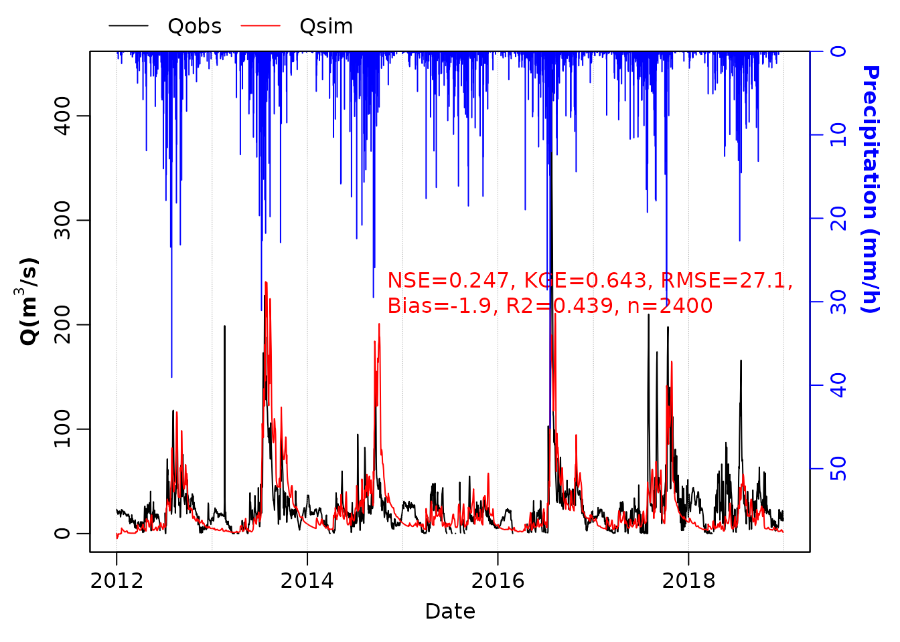

calim_XAJ.Rmd极度简单、皆可掌握的XAJ模型。 Rcpp版的XAJ模型为钟睿达师弟所写，使用请正确引用。
只需要输入以下三个变量：
prcp : 流域平均降水(mm/d)
ET0 : 流域平均潜在蒸散发(ET0)
Qobs : 流域出口点流量(m^3/s)
即可实现径流模拟。模拟过程中，XAJ_calib以KGE为目标函数，采用sceua实现自动率参。
下文模拟的是2021年10月山西暴雨中心的汾河流域，河津站。以2012-2018年作为率定期，将该时段的所有数据拿来训练。可以看到KGE最终可达0.707。
library(hydroTools) # remotes::install_github("rpkgs/hydroTools")
#> The legacy packages maptools, rgdal, and rgeos, underpinning the sp package,
#> which was just loaded, were retired in October 2023.
#> Please refer to R-spatial evolution reports for details, especially
#> https://r-spatial.org/r/2023/05/15/evolution4.html.
#> It may be desirable to make the sf package available;
#> package maintainers should consider adding sf to Suggests:.
#> Please note that 'maptools' will be retired during October 2023,
#> plan transition at your earliest convenience (see
#> https://r-spatial.org/r/2023/05/15/evolution4.html and earlier blogs
#> for guidance);some functionality will be moved to 'sp'.
#> Checking rgeos availability: FALSE
infile = system.file("extdata/XAJ_input_Hejin_2012-2018.rda", package = "hydroTools")
load(infile)
df = input$data
res <- XAJ_calib(df$Qobs, df$prcp, df$ET0, date = df$date,
input$area, dt = 24, maxn = 1000)
#> 332 best -0.146 function convergence 200 parameter convergence 9806.662
#> 517 best -0.366 function convergence 200 parameter convergence 9521.885
#> 707 best -0.425 function convergence 200 parameter convergence 8104.431
#> 890 best -0.577 function convergence 200 parameter convergence 6517.944
#> 1077 best -0.659 function convergence 200 parameter convergence 5783.561
print(str(res), 2)
#> List of 4
#> $ data :Classes 'data.table' and 'data.frame': 2556 obs. of 5 variables:
#> ..$ date: Date[1:2556], format: "2012-01-01" "2012-01-02" ...
#> ..$ prcp: num [1:2556] 0 0.02 0.04 0.25 0.01 0 0.87 0.01 0 0 ...
#> ..$ ET0 : num [1:2556] 0.28 0.77 0.715 0.35 0.275 ...
#> ..$ Qobs: num [1:2556] 23.2 21.1 20.5 21.9 19.6 18.5 20.7 20.7 19.3 20.8 ...
#> ..$ Qsim: num [1:2556] 0 3.44 3.32 2.96 2.63 ...
#> ..- attr(*, ".internal.selfref")=<externalptr>
#> $ gof : tibble [1 × 11] (S3: tbl_df/tbl/data.frame)
#> ..$ R : num 0.669
#> ..$ pvalue : num 8.69e-312
#> ..$ R2 : num 0.448
#> ..$ NSE : num 0.279
#> ..$ KGE : num 0.658
#> ..$ RMSE : num 26.6
#> ..$ MAE : num 15.9
#> ..$ Bias : num -0.933
#> ..$ Bias_perc: num -0.035
#> ..$ AI : num 0.806
#> ..$ n_sim : int 2400
#> $ model :List of 3
#> ..$ par : Named num [1:15] 1.44554 0.00843 19.80357 85.75426 57.61422 ...
#> .. ..- attr(*, "names")= chr [1:15] "KC" "IM" "WUM" "WLM" ...
#> ..$ area: num 38900
#> ..$ dt : num 24
#> $ intermediate:'data.frame': 2556 obs. of 17 variables:
#> ..$ date: Date[1:2556], format: "2012-01-01" "2012-01-02" ...
#> ..$ E : num [1:2556] 0.405 1.113 1.034 0.506 0.398 ...
#> ..$ EU : num [1:2556] 0.405 1.113 1.034 0.506 0.398 ...
#> ..$ EL : num [1:2556] 0 0 0 0 0 0 0 0 0 0 ...
#> ..$ ED : num [1:2556] 0 0 0 0 0 0 0 0 0 0 ...
#> ..$ W : num [1:2556] 130 129 128 128 127 ...
#> ..$ WU : num [1:2556] 15.4 14.3 13.4 13.1 12.7 ...
#> ..$ WL : num [1:2556] 68.6 68.6 68.6 68.6 68.6 ...
#> ..$ WD : num [1:2556] 46.1 46.1 46.1 46.1 46.1 ...
#> ..$ R : num [1:2556] 0 0 0 0 0 ...
#> ..$ RS : num [1:2556] 0.00 1.69e-04 3.37e-04 2.11e-03 8.43e-05 ...
#> ..$ RI : num [1:2556] 8.74e-01 7.11e-02 5.80e-03 4.79e-04 3.94e-05 ...
#> ..$ RG : num [1:2556] 6.57e-01 5.35e-02 4.36e-03 3.60e-04 2.97e-05 ...
#> ..$ Q : num [1:2556] 0 3.44 3.32 2.96 2.63 ...
#> ..$ QS : num [1:2556] 0.00 2.23e-10 1.06e-09 5.73e-09 1.60e-08 ...
#> ..$ QI : num [1:2556] 0 3.07 2.93 2.58 2.25 ...
#> ..$ QG : num [1:2556] 0 0.363 0.389 0.387 0.383 ...
#> NULL从图来看，模型整体模拟结果尚可。但部分洪水过程无法捕捉到（如2018年春秋季节），怀疑是流域内水库放水的人为活动影响所致。
df_q = res$data[, c("date", "Qobs", "Qsim")]
df_prcp = res$data[, c("date", "prcp")]
# plot_calib(res$data, main = input$site)
plot_runoff(df_q, df_prcp, ylim2 = c(60, 0), legend.position = c(1, 0.6))
将2021年山西暴雨期间的气象数据输入，即可得到2021年山西暴雨洪水的模拟情况。这里暂且假设2021的气象数据newdata已知（用之前的数据df代替）。
newdata需包含如下变量:
prcp : 流域平均降水(mm / d)
ET0 : 流域平均潜在蒸散发(ET0)
date : (optional) 对应的时间信息
将newdata带入即可得到验证期的径流模拟情况：
res_valid = XAJ_predict(res$model, newdata = df)
head(res_valid)
#> date Qobs prcp ET0 Qsim
#> 1: 2012-01-01 23.2 0.00 0.2798821 0.000000
#> 2: 2012-01-02 21.1 0.02 0.7696797 3.435587
#> 3: 2012-01-03 20.5 0.04 0.7152260 3.319556
#> 4: 2012-01-04 21.9 0.25 0.3498458 2.964277
#> 5: 2012-01-05 19.6 0.01 0.2750719 2.632883
#> 6: 2012-01-06 18.5 0.00 0.3265188 2.341542安装方法
remotes::install_github("rpkgs/hydroTools")Dongdong Kong and Ruida Zhong (2021). hydroTools: Tools for hydrological model. R package version 0.1.4.
Ruida Zhong, Dongdong Kong, Xiaohong Chen, Zhaoli Wang and Chengguang Lai (2021). VIC5: The Variable Infiltration Capacity (VIC) Hydrological Model. R package version 0.2.4. https://CRAN.R-project.org/package=VIC5
Ruida Zhong (2018). XAJ: An R implementation of three-source Xinanjiang model by Renjun Zhao. R package version 0.0.1. https://github.com/Sibada/XAJ